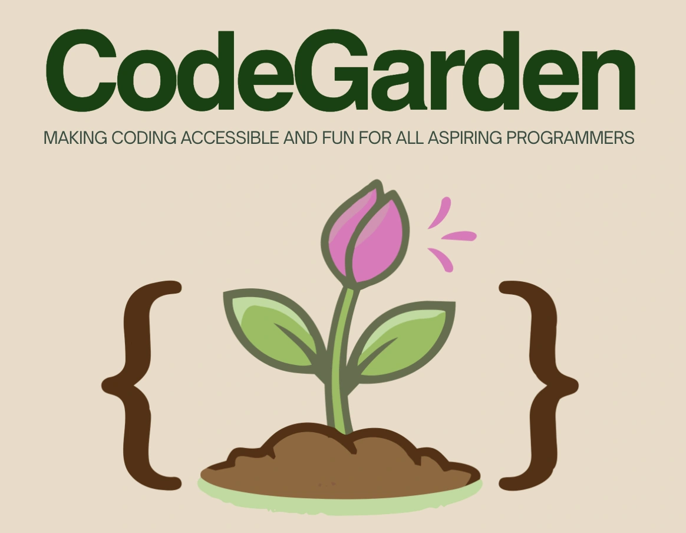
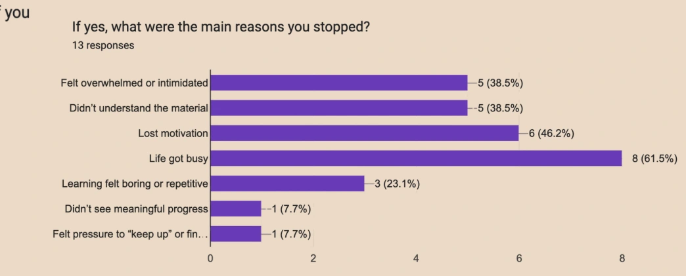
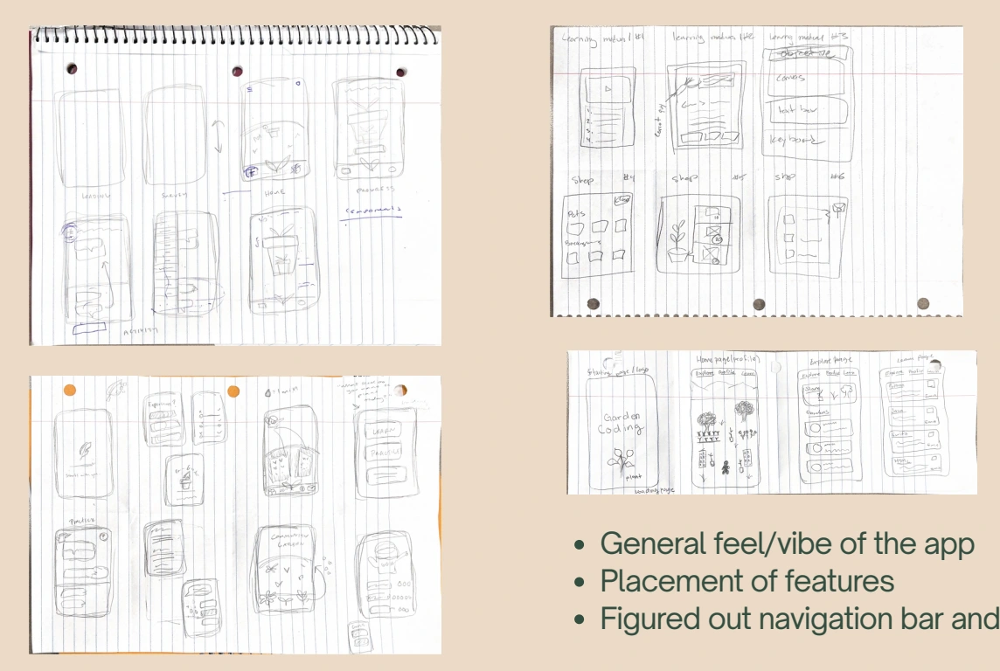
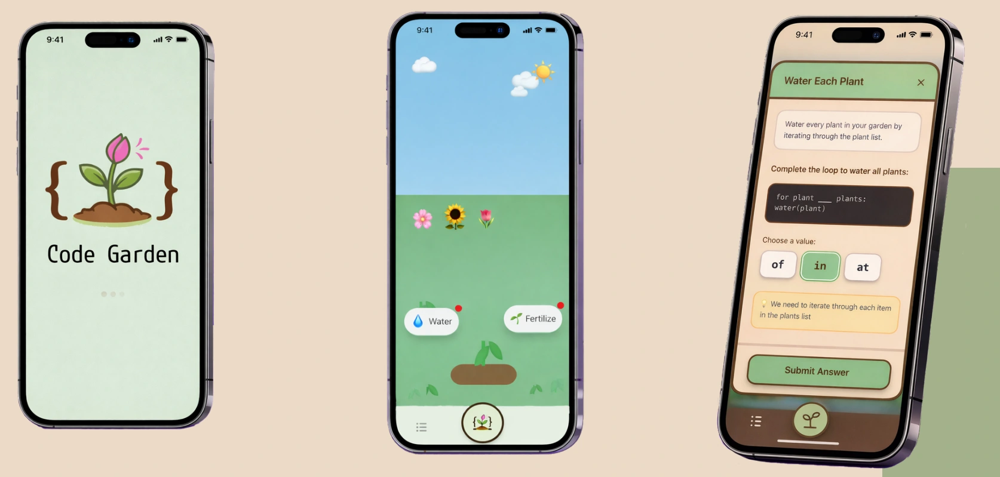
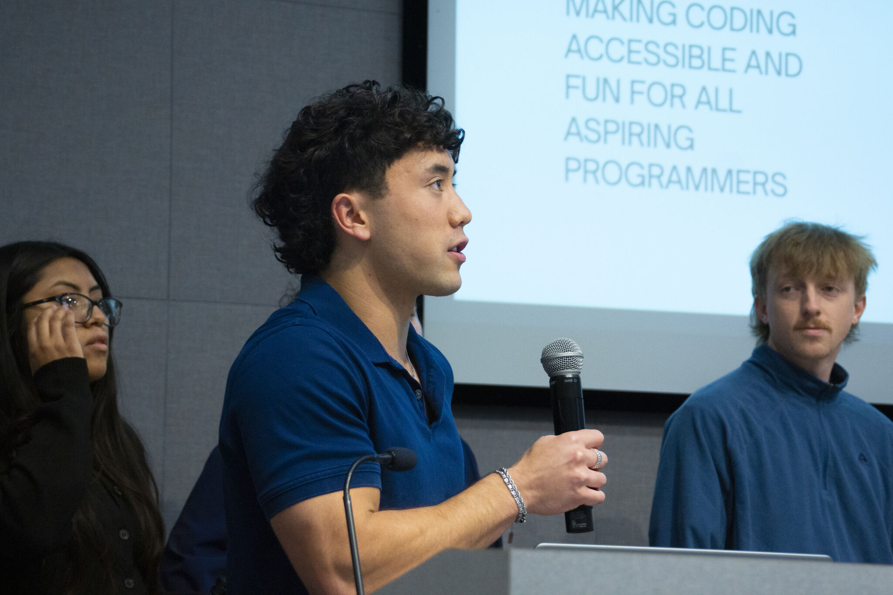

UX Hackathon · UX Fest SLO 2026
CodeGarden
What would a coding lesson look like if the learner got to choose what grew next?
I led a five-person team in a 48-hour UX design and pitch competition. We designed a mobile Figma prototype where learners grow a garden by practicing code. I researched how people learn, mapped paths through the app, and helped build the prototype. We pitched CodeGarden to industry judges and placed in the top five.

Why Do Curious Learners Stop?
We started with people who had already tried coding. Of the 13 people who answered our survey question about why they stopped, eight said life got busy, six had lost motivation, and five felt overwhelmed or intimidated. A lesson had to be small enough to fit into a busy day and meaningful enough to come back to.

Choosing What to Grow
Our competitor review gave us two ideas worth keeping: Mimo made room for short lessons, and Hopscotch made programming playful. We wanted learners to have that sense of play while choosing a topic that mattered to them.
In FigJam, we paired familiar garden tasks with coding concepts. Labeling a plant could introduce variables. Repeating a chore like chopping wood could introduce loops. I mapped how someone could choose an interest during onboarding, pick a task, and follow it into a short lesson. Our sketches explored where those choices belonged on a phone screen.


From a Garden Task to a Coding Lesson
The garden became the home screen. A learner could explore what to grow, then open a task with a concrete goal. The mobile screens below show how the design moves from the flower mark to an open garden and finally into a structured exercise. We paired soft greens and hand-drawn plants with monospaced type to connect the garden to the code underneath it.

The Pitch

Our pitch followed one learner decision from the survey to the screen: if someone only has a few minutes, what would make it worth opening the app? We walked the judges through choosing a garden task and seeing the coding concept inside it. That walkthrough brought our research, sketches, and prototype together in the final presentation.
CodeGarden placed in the top five at UX Fest SLO.
Back to Strategy & Design